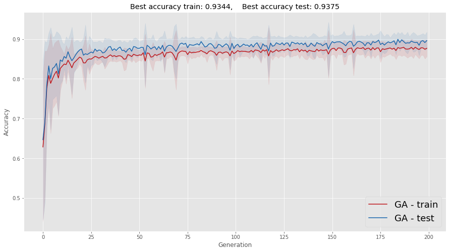

2 Implementating the GA "recipe"
Let's start with the most basic things, which more than any math, involve some project development: we need to decide (i) how to store data and (ii) how to store them as genomes. We shall do the following: in the kth layer of an ANN we define the next element as follows:
\[ \label{ANN} Z^{[k+1]}= W^{[k]}\cdot Z^{[k]} + b^{[k]}; \quad A^{[k+1]} = \sigma(Z^{[k+1]}).\tag{3} \] The function \(\sigma(\cdot)\) is known as activation function, which in our case will be ReLu units in the hidden layers, and a sigmoid in the last layer. Parameters \(W^{[k]}\) and \(b^{[k]}\) are the weights (some people also call them "weight and bias", respectively).
Since we need to train several ANNs, we shall denote by \(W_j^{[k]}\) the kth layer of the individual \(j\). We shall store all of them as a stack, a 3D array. For instance, if \(W_k\) denotes this 3D matrix, then \(W[:,:,j]\) corresponds to the matrix \(W_j^{[k]}\).
With regards to genomes, we shall store them as a row vector. In this way, if we have a population with size \(N\) and genomes of length \(l\), all the population genomes will be stored as a matrix \(G \in \mathbb{R}^{N\times l}\).
In what follows, we separate the weights as two dictionaries: one contains \(W\), adn the other \(b\) (see Equation \(\eqref{ANN}\)).
class Genomes_and_weights:
def __init__(self):
pass
def initialize_weights(self, size, pop_size):
"""
Initialize weights of pop_size ANNs.
Arguments:
----------
size : array, where the jth entry correspond to the number of nodes in the jth layer of an ANN.
pop_size : array, population size.
"""
assert(pop_size%2 == 0)
N = len(size)
W, b = {}, {}
for i in range(N-1):
W[str(i)] = np.asarray(
np.random.randn(size[i+1], size[i], pop_size), dtype = 'float32'
)
b[str(i)] = np.asarray(
np.random.randn(size[i+1], 1, pop_size), dtype = 'float32'
)
return W, b
def weights_to_genome(self, W, b):
"""
Convert weights to genomes, giving a dictionary as output.
Ech layer W of size (a,b, pop_size) is converted to a matrix of size
(pop_size, a*b).
b has size (n_k, 1, pop_size), becoming a (pop_size, n_k).
Arguments:
----------
W : dictionary, with W weights (see Equation 3).
b : dictionary, with b weights (see Equation 3).
"""
N = len(W.keys())
pop_size = W["0"].shape[-1]
genome_W = {}
genome_b = {}
for i in range(N):
genome_b[str(i)] = np.transpose(np.array(np.squeeze(b[str(i)]), ndmin = 2))
genome_W[str(i)] = W[str(i)].reshape(-1, pop_size).T
return genome_W, genome_b
def genome_to_weights(self, genome_W, genome_b, size):
"""
Convert genomes back to weights.
Arguments:
----------
genome_W : dictionary, where the component W of each layer is written as a genome (see Equation 3).
genome_b : dictionary, where the component b of each layer is written as a genome (see Equation 3).
"""
N = len(genome_W.keys())
pop_size = genome_W["0"].shape[0]
W, b = { }, { }
for i in range(N):
W[str(i)] = genome_W[str(i)].reshape(pop_size, size[i+1], size[i])
W[str(i)] = np.moveaxis(W[str(i)], 0, -1)
b[str(i)] = genome_b[str(i)].T
b[str(i)] = b[str(i)].reshape(b[str(i)].shape[0], 1, b[str(i)].shape[1])
return W, b
def crossover(self, W, p_c):
"""
For every k in pop_size/2
cross over W[2*k,:] and W[2*k+1,:]
W is flat genome
Arguments:
----------
W : dictionary, with W weights (see Equation 3).
p_c : probability of crossover.
"""
pop_size = W["0"].shape[0]
numb_keys = len(W.keys())
cut = {}
### Define cuts
for i in range(numb_keys):
length_genome = W[str(i)].shape[1]
cut_not_cut = np.random.uniform(size = int(pop_size/2))
cut_not_cut = cut_not_cut < p_c
cut[str(i)] = cut_not_cut * np.random.choice(length_genome, int(pop_size / 2))
## Perform crossover
for i in range(numb_keys):
W_now = W[str(i)]
for cut_now in range(int(pop_size / 2)):
aux = np.copy(W_now[2 * cut_now, :])
W_now[2 * cut_now,cut[str(i)][cut_now]:] = W_now[2 * cut_now + 1, cut[str(i)][cut_now]:]
W_now[2 * cut_now + 1,cut[str(i)][cut_now]:] = aux[cut[str(i)][cut_now]:]
### This is a shallow copy. It will change the dictionary W
def mutate_genome(self, genome, p_m):
"""
Mutate genome, each entry changing - by a gaussian noise - with probability p_m.
Arguments:
----------
genome : dictionary, contains the genomes of the whole population.
p_c : probability of crossover.
"""
pop_size = genome["0"].shape[0]
numb_keys = len(W.keys())
for i in range(numb_keys):
genome_now = genome[str(i)]
add_mutation = np.random.uniform(size = [pop_size,genome_now.shape[1]]) < p_m
add_mutation = add_mutation * np.random.randn(pop_size,genome_now.shape[1])
genome_now += add_mutation2.1 Propagate the model
I wrote a tensorflow implementation of the model below, using sigmoid_cross_entropy_with_logits. Since we now know how to feed the weights to a keras model we shall stick with the latter approach.
The code will not be efficient because it is not vectorized (on population). Apparently there is a nicer way to implement using keras. Keras was mainly designed for CNN's, therefore it has many nice 3D matrices computations (like multiplications, convolutions and so) already implemented.
https://www.tensorflow.org/api_docs/python/tf/keras/backend/dot
For this example this is not a big deal. In real application, this can be important.
class GA_Model:
def __init__(self):
pass
def forward_using_keras(self, model, X, Y, W, b, j):
"""
Forward propagate the jth individual ANN
with input X, label Y, weights W and b of the whole population in a given list,
where ith entry of the latter corresponds to
the ith layer (see discussion above).
Arguments:
----------
model: keras model
X : features, as batch_size X features.
Y : labels, as batch_size X {0,1}.
W : dictionary, with W weights (see Equation 3).
b : dictionary, with b weights (see Equation 3).
j : integer, individual number.
"""
N_layers = len(W.keys())
new_weights = [ ]
for i in range(N_layers):
# Recall that W has to be transposed in keras
new_weights.append(np.transpose(W[str(i)][:,:,j]))
new_weights.append(np.transpose(b[str(i)][:,:,j]).reshape(-1))
model.set_weights(new_weights)
loss, accuracy = model.evaluate(X, Y, verbose = False)
return loss, accuracy
def fwd_propagate_population_keras(self,model, X, Y, W, b):
"""
Forward propagate the whole population genome as ANNs,
with input X, label Y, weights W and b of the whole population in a given list,
where ith entry of the latter corresponds to
the ith layer (see discussion above).
Arguments:
----------
model: keras model
X : features, as batch_size X features.
Y : labels, as batch_size X {0,1}.
W : dictionary, with W weights (see Equation 3).
b : dictionary, with b weights (see Equation 3).
"""
N_layers = len(W.keys())+1
pop_size = W["0"].shape[-1]
cost = [ ]
predict = [ ]
for gen_now in range(pop_size):
cost_now , pred_now = self.forward_using_keras(model, X, Y, W, b, gen_now)
cost.append(cost_now)
predict.append(pred_now)
self.cost = cost
self.predict = predict
def genome_score(self, cost, genome_W, genome_b, beta = 10):
"""
Return a new population of genomes, selected randomly according to the partition function
(see Equation 3).
Arguments:
----------
genome_W : dictionary, where the component W of each layer is written as a genome (see Equation 3).
genome_b : dictionary, where the component b of each layer is written as a genome (see Equation 3).
beta : parameters used for the partition function (see Equation 3).
cost : accuracy associated to an ANN with corresponding weights (given by genome_{W,b});
used as parameter in the partition function (see Equation 3).
"""
pop_size = genome_W["0"].shape[0]
costs = self.cost
p_c = beta_softmax(beta, costs)
selected = np.random.choice(pop_size,pop_size, p = p_c)
N_layers = len(W.keys())
for i in range(N_layers):
genome_W[str(i)] = genome_W[str(i)][selected,:]
genome_b[str(i)] = genome_b[str(i)][selected,:]
return genome_W, genome_b
def beta_softmax(beta, Z):
"""
Return a selection of genomes by order of preference
Arguments:
----------
beta : parameters used for the partition function
"""
a = tf.nn.softmax(logits = -beta * tf.constant(Z))
return a.numpy()2.2 Implementation
First we set up the parameters:
N_generations = 200
pop_size = 100
layer_sizes = [2,4,1]
ga_model = GA_Model()
genome_and_weights = Genomes_and_weights()
p_m = 0.005 # probability of mutation
p_c = 0.8 # probability of crossoverSave_results = { }
for test in range(20):
accuracy_train = [ ]
accuracy_test = [ ]
W, b = genome_and_weights.initialize_weights(layer_sizes,pop_size)
print("\n Test number \t", test)
for i in range(N_generations):
cost = ga_model.fwd_propagate_population_keras(model, X_train, Y_train, W, b)
genome_W, genome_b = genome_and_weights.weights_to_genome(W, b)
genome_W, genome_b = ga_model.genome_score(cost, genome_W, genome_b)
# crossover
genome_and_weights.crossover(genome_W, p_c)
genome_and_weights.crossover(genome_b, p_c)
# mutation
genome_and_weights.mutate_genome(genome_W, p_m)
genome_and_weights.mutate_genome(genome_b, p_m)
W, b = genome_and_weights.genome_to_weights(genome_W, genome_b,layer_sizes)
## Get accuracy
all_costs = np.array(ga_model.cost, ndmin = 1)
m = np.min(np.squeeze(np.asarray(np.where(all_costs == np.min(all_costs)))))
# Training set
_, predict_train = ga_model.forward_using_keras(model, X_train, Y_train, W, b, m)
accuracy_train.append(predict_train)
# Test set
_, predict_test = ga_model.forward_using_keras(model, X_test, Y_test, W, b, m)
accuracy_test.append(predict_test)
Save_results[str(test)] = [accuracy_test,accuracy_train]Now let's plot some graphs. I'll need some extra libraries for that
## To zoom in part of the graph we will use these libraries
from mpl_toolkits.axes_grid1.inset_locator import zoomed_inset_axes
from mpl_toolkits.axes_grid1.inset_locator import mark_inset
# To customize legend
from matplotlib.lines import Line2Dnumber_runs = 20
Accuracy_test = np.zeros([number_runs, N_generations])
Accuracy_train = np.zeros([number_runs, N_generations])
for test in range(number_runs):
Accuracy_test[test,:] = Save_results[str(test)][0]
Accuracy_train[test,:] = Save_results[str(test)][1]av_test = np.average(Accuracy_test,axis=0)
std_test = np.std(Accuracy_test,axis=0)
av_train = np.average(Accuracy_train,axis=0)
std_train = np.std(Accuracy_train,axis=0)f, ax = plt.subplots(figsize=(15,10))
axins = plt.axes([0.4, 0.16, 0.5,0.5])
cmap_test=plt.cm.Blues(np.linspace(0,1,number_runs))
cmap_train=plt.cm.Reds(np.linspace(0,1,number_runs))
L = 50
for i in range(number_runs):
ax.plot(Accuracy_train[i,0:],lw = 2,linestyle=(0,(3,1,1,1)), alpha = .8, color=cmap_train[i])
ax.plot(Accuracy_test[i,0:],lw = 2,linestyle='-', alpha = .8,color=cmap_test[i])
if i==13:
axins.set_title("A closer view of population "+str(i))
axins.plot(
np.arange(N_generations)[L:],Accuracy_train[i,L:],\
lw = 2,linestyle=(0,(3,1,1,1)), alpha = .8,color=cmap_train[i]
)
axins.plot(
np.arange(N_generations)[L:],Accuracy_test[i,L:],\
lw = 2,linestyle=(0,(3,1,1,1)), alpha = .8,color=cmap_test[i]
)
axins.set_ylim(0.83,.903)
ax.set_title(
"Best accuracy train: "+str(np.round(np.max(Accuracy_train),4))+",\
Best accuracy test: "+str(np.round(np.max(Accuracy_test),4))
)
ax.set_xlabel("Generation")
ax.set_ylabel("Accuracy")
## Custom legend
legend_elements = [Line2D([0], [0], color = cmap_train[15], lw=4, label='GA - training'),
Line2D([0], [0], color = cmap_test[15], lw=4, label='GA - testing')]
ax.legend(handles = legend_elements,fontsize= 18, loc = 3)
ax.grid(True)
plt.show()
It is somehow better to see the average and standard deviation of these runs. One caveat that you should be aware of is that averaging removes a lot of the oscillation you see in each realization of this process; the standard deviation (represented as a shadow) helps a little, keeping part of this information in the plot.
f, ax = plt.subplots(figsize = (15,8))
ax.plot(
av_train, color = cmap_train[15], label = 'GA - train'
)
ax.plot(
av_test, color = cmap_test[15], label = 'GA - test'
)
ax.set_title(
"Best accuracy train: "+str(np.round(np.max(Accuracy_train),4))+",\
Best accuracy test: "+str(np.round(np.max(Accuracy_test),4))
)
x_domain_plot = np.arange(len(av_train-std_train))
# Shaded part with st deviation information
ax.fill_between(
x_domain_plot, av_train - std_train, av_train + std_train,color = cmap_train[15], alpha =.1
)
ax.fill_between(
x_domain_plot, av_test - std_test, av_test + std_test, color = cmap_test[15], alpha =.1
)
ax.set_xlabel("Generation")
ax.set_ylabel("Accuracy")
ax.legend(fontsize = 18, loc = 4)
ax.grid(True)
plt.show()
In summary, we can get results that are even better than those using the "classical" backpropagation approach. Notice that this is heavily dependant on the fact that the problem is not that high dimensional, i.e., not many parameters to tubne by optimization. For high dimensional problems a hybrid approach is probably more apropriate.
2.3 Final remarks: can we improve these results?
Surely we can! I will leave some ideas below, you can try to find others. I also strongly recommend Hillis' paper: it is full of nice ideas.
- Varying \(\beta\): in the function "beta_softmax" there is a parameter beta. It plays the role of the Boltzmann constant (that's what inspired me, actually), which is proportional to 1/T, where T is the temperature. The idea could be to take \(T \downarrow 0\), in what is known as quenching. In each epoch we could lower T a little (hence making \(\beta\) a bit larger). Physically, doing it too fast is known as quenching, whereas doing it slowly is known as anneling. Some people call it "tempering". As an optimization technique, this idea became widespread after an interesting paper by Fitzpatrick and others in the 80s.
- Desing different crossovers: I only did one type, where we choose a point in the genome and cut. But why not crossing over in many different points? That would be possible too
- Diminishing the mutation probability and crossover probability through time: this is similar to the idea 1.
The range of possibilities is enormous. If you are really interested you should take a look at Hillis' paper and at the MIT OCW reference.